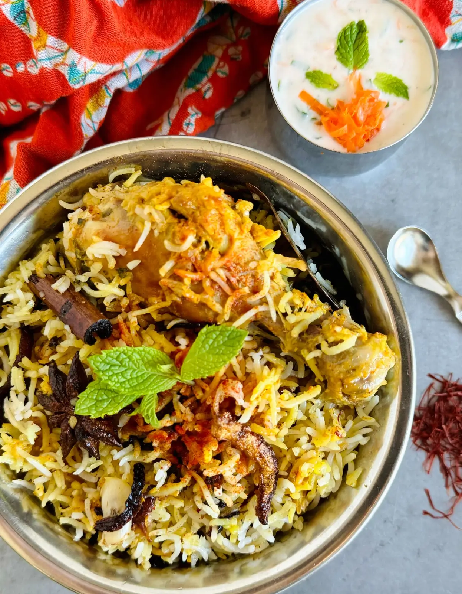
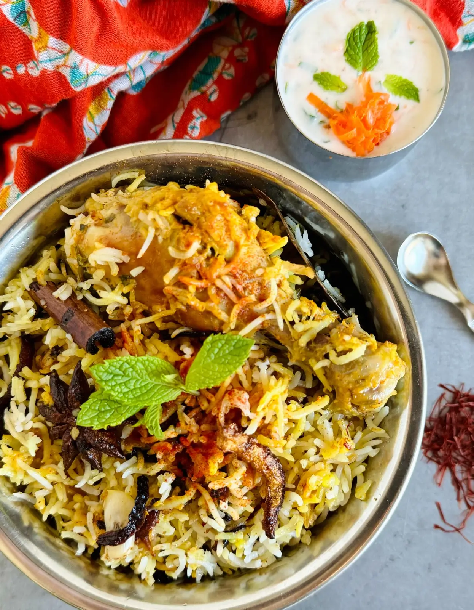
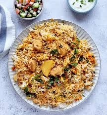
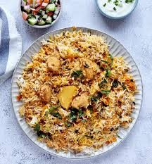

Chichen Biryani
(receipe)
 

 

Biryani is a celebratory rice and meat dish cherished in the Indian sub-continent.
A traditional biryani consists of fluffy basmati rice layered over tender & succulent pieces of meat,
accompanied with the mesmerizing aromas of spices, herbs & caramelized onions.
It is one of the most liked dish across many countires. It is flavourful and aromatic that originated in the Indian sub-continent
It is made by layeing fragrant rice with marinated meat or vegetables aling with spices of various kind
Ingredients
Listed below are the Ingredients required in order to make the perfect biryani possible :
- Oil/Ghee
- Onions
- Meat (Beef or Chicken)/Vegetables
- Garlic and Ginger
- Tomatoes
- Yogurt
- Rice
- Dried Plums

Method of making Biryani
In order to make the perfect Biryani, We must follow the three main steps listed below:
- Step 1: Prepare the chicken curry.
- Prepare the biryani masala and marinate the chicken.
Start the chicken curry. While the chicken cooks over low heat, make the rice.
Steps to make the Biryani Masala
To make Biryani masala for this recipe,
combine the following ingredients in a spice grinder and process until mostly smooth
- 1 medium dried bay leaf
- 2 dried button red chili peppers
- 1 small whole mace
- 1 2-inch cinnamon stick
- 4-5 whole cloves
- 1 black cardamom
- 1 star anise
- 3-4 green cardamom pods
- 1 tsp roasted cumin seeds or black cumin seeds
- 1/2 tsp black peppercorns
- 1/4 tsp fennel
- 1/4 tsp carom seeds
- Step 2: Prepare the rice.
- Bring a pot of water to a boil and parboil the rice. Drain and set aside.
- Step 3: Bring it all together for a final steam.
- Layer half of the rice, all of the chicken, and then the remaining rice on top. Add the finishing touches.
Allow steam to develop, then lower the heat and let the flavors meld.